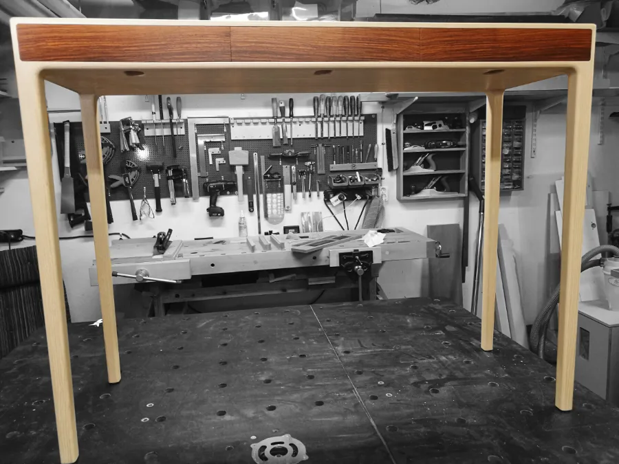
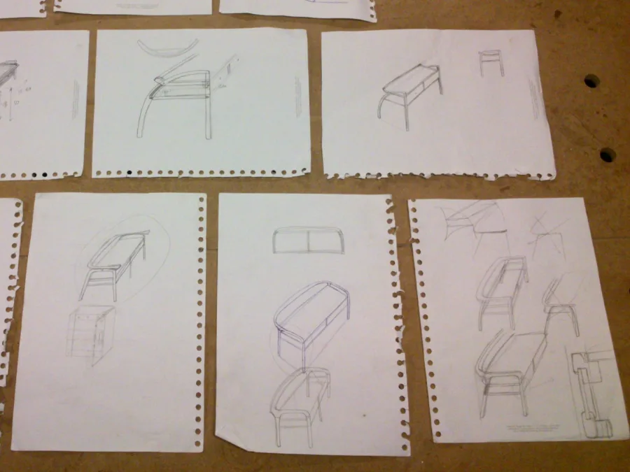
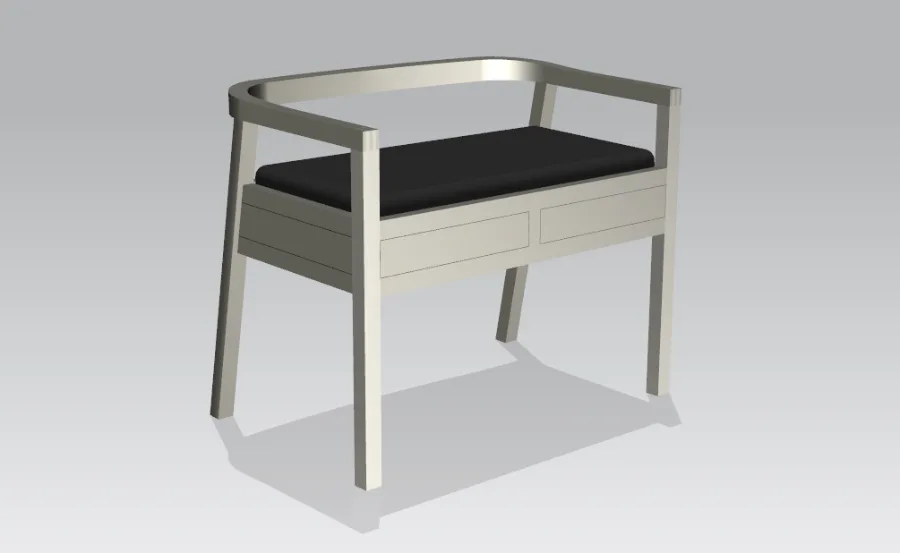

Carmonius Finsnickeri / Malmö
Möbler med
egen karaktär.
Din idé. Träets möjligheter.
Ett hantverk som gör skillnaden.
Formgivning & möbeltillverkningFrån skiss till sista detalj
Formgivet för digVisualiserat i 3DTillverkat med omsorg
01 / Utvalda möbler
En plats för
det personliga.
En möbel ska göra mer än att fylla ett rum. Den ska passa livet som pågår där. Här möts dina behov, träets uttryck och Olas formgivning.


02 / Det sitter i detaljerna
Vackert på håll.
Ännu bättre nära.
En fog som möter precis. Ett grepp som känns självklart. En ådring som får fortsätta över en lådfront. Det är de små besluten som formar helheten.
Maskinerna gör grovjobbet. Klassiska handverktyg ger den sista omsorgen.
Kom närmare hantverket03 / Från tanke till trä
En tydlig process.
Din möbel hela vägen.

01Idé & form
Vi pratar om funktion, proportioner och vad möbeln ska tillföra ditt rum.

02Se det i 3D
Mått, material och kulör kan prövas i modellen innan tillverkningen börjar.
 03
03Trä & hantverk
Genomtänkta konstruktioner och den sista bearbetningen för hand.

04 / Möt Ola Carmonius
Ingenjörens precision.
Snickarens känsla.
Med bakgrund som civilingenjör i maskinteknik och ett stort intresse för formgivning förenar Ola konstruktion med möbelhantverk. Carmonius Finsnickeri startade hösten 2016.
Lär känna OlaHantverk som uppmärksammats
Från den egna verkstaden
till en större publik.
Fine Woodworking ↗Olas borrjiggar och verkstadslösningar uppmärksammades i april 2025.Veritas ↗Domino Joinery Table – ett verktyg med ursprung i Olas konstruktion.Från din idé till något alldeles eget